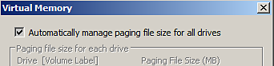
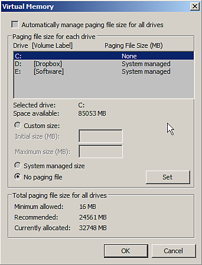

Substance 3D Painter can be unstable if the paging file ( swap memory/ virtual memory) is set with a value too low .
It is advised to let the Operating System handling these settings (which is normally the case by default). Substance 3D Painter requires a minimum of 16GB of virtual memory in order to work properly.
Changing the virtual memory size on Windows will require a restart of the computer.
Access the virtual memory settings with the following steps
Now it is possible to either:
or
Automatic:

Manual:
